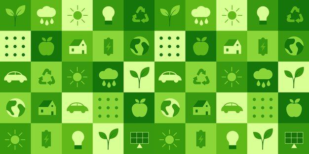
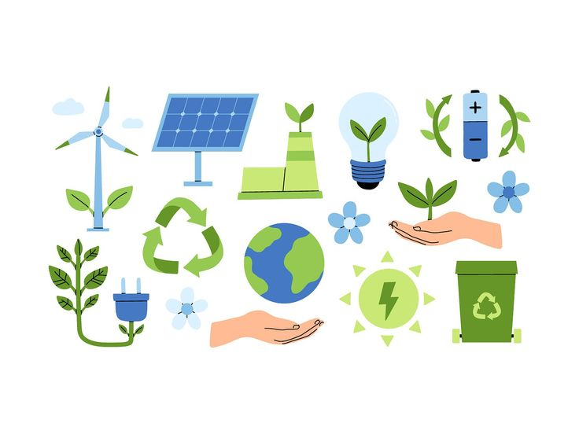
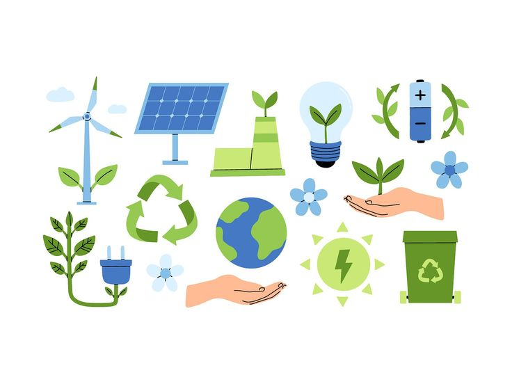
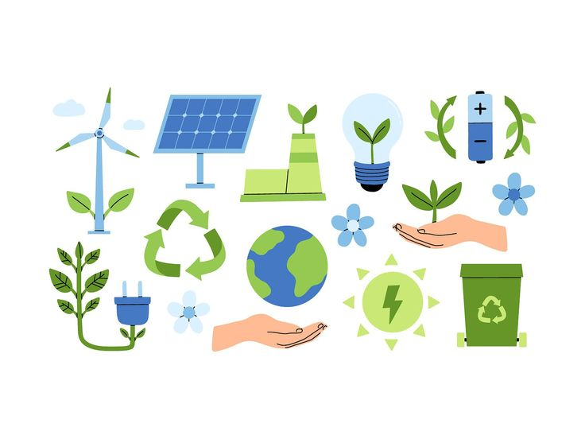
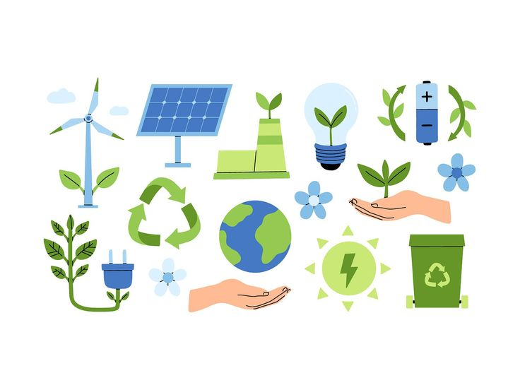

Écovie

 



L'énergie verte désigne les sources d'énergie renouvelables et non polluantes, telles que l'énergie solaire, éolienne ou hydraulique. Elle est essentielle pour un avenir plus durable.
Notre consommation énergétique a un impact direct sur le climat. Les énergies fossiles, comme le charbon ou le pétrole, émettent beaucoup de CO₂. Il est donc crucial de repenser nos habitudes et d'adopter des comportements plus responsables.